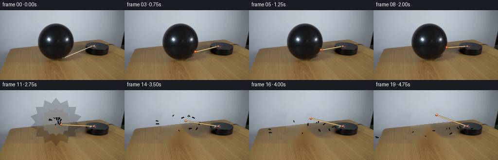
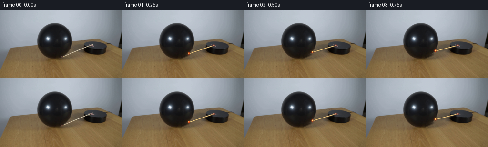
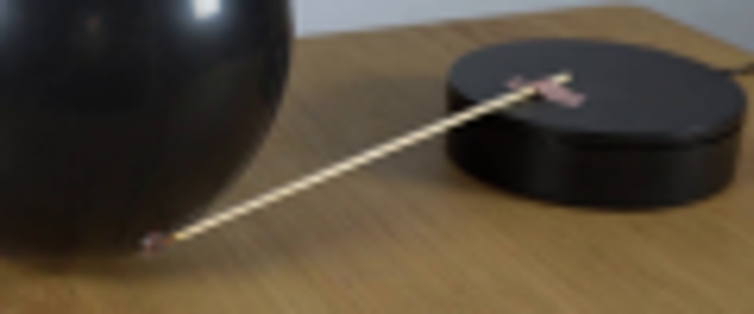
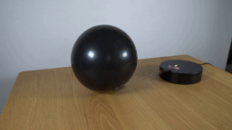
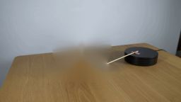
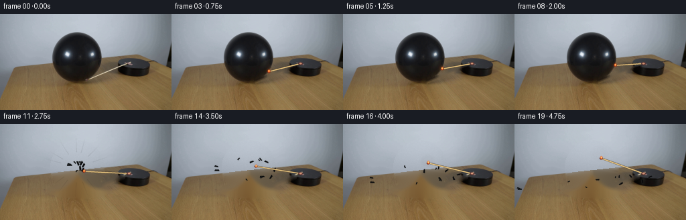

CODING AGENTS AS PIXEL WORLD MODELS
traex/GPT-5.6-Sol · 0112
点击播放 · 原生 RGB 像素
逐轮保存的候选
回放视频、检查图与代码变化。
每份候选均可单独播放。实际图片检查记录在下方工具轨迹中。
候选 01播放与检查图
点击播放 · 原生 RGB 像素

展开代码变化
--- 上一保存版本
+++ 本次保存版本
@@ -0,0 +1,210 @@
+from pathlib import Path
+import math
+import cv2
+import numpy as np
+from PIL import Image, ImageDraw, ImageFilter
+import artifact_io
+
+CASE_DIR = Path(__file__).resolve().parent
+W, H, N = 256, 144, 20
+S = 4 # supersampling for clean, photographic small-object edges
+
+
+def rgba_layer():
+ return Image.new("RGBA", (W*S, H*S), (0, 0, 0, 0))
+
+
+def line(draw, xy, fill, width):
+ draw.line(tuple(int(round(v*S)) for p in xy for v in p), fill=fill,
+ width=max(1, int(round(width*S))))
+
+
+def ellipse(draw, box, fill):
+ draw.ellipse(tuple(int(round(v*S)) for v in box), fill=fill)
+
+
+def polygon(draw, pts, fill):
+ draw.polygon([(int(round(x*S)), int(round(y*S))) for x,y in pts], fill=fill)
+
+
+def composite(frame, layer):
+ lay = layer.resize((W,H), Image.Resampling.LANCZOS)
+ return np.asarray(Image.alpha_composite(Image.fromarray(frame).convert('RGBA'), lay).convert('RGB'), dtype=np.uint8)
+
+
+def make_clean_plates(src):
+ bgr = cv2.cvtColor(src, cv2.COLOR_RGB2BGR)
+ # Remove only the original diagonal match. The small mask retains the platform and balloon.
+ lm = np.zeros((H,W), np.uint8)
+ cv2.line(lm, (125,101), (194,73), 255, 4, cv2.LINE_AA)
+ cv2.circle(lm, (128,99), 3, 255, -1)
+ no_match = cv2.inpaint(bgr, lm, 3, cv2.INPAINT_TELEA)
+
+ # A clean plate revealed after the balloon bursts. Include its soft cast/contact shadow.
+ bm = np.zeros((H,W), np.uint8)
+ cv2.ellipse(bm, (115,65), (40,41), 0, 0, 360, 255, -1)
+ cv2.ellipse(bm, (117,99), (47,12), 0, 0, 360, 255, -1)
+ cv2.line(bm, (124,101), (183,79), 255, 5, cv2.LINE_AA)
+ clear = cv2.inpaint(bgr, bm, 7, cv2.INPAINT_TELEA)
+
+ # Restore the smooth studio-wall lighting analytically in the hidden upper region.
+ yy, xx = np.mgrid[0:H, 0:W]
+ boundary = 82.2 - 0.108 * xx
+ wall_valid = (yy < boundary-2) & (bm == 0) & (xx < 220)
+ feats = np.stack([np.ones_like(xx), xx, yy, xx*xx, xx*yy, yy*yy,
+ xx**3, (xx**2)*yy, xx*(yy**2)], axis=-1).astype(np.float64)
+ region = (bm > 0) & (yy < boundary-1)
+ for c in range(3):
+ A = feats[wall_valid]
+ z = bgr[:,:,c][wall_valid].astype(float)
+ coef, *_ = np.linalg.lstsq(A, z, rcond=None)
+ pred = np.clip(feats @ coef, 0, 255)
+ clear[:,:,c][region] = pred[region].astype(np.uint8)
+ # Very faint sensor texture prevents the repaired wall from looking synthetic.
+ rng = np.random.default_rng(112)
+ noise = cv2.GaussianBlur(rng.normal(0, .9, (H,W)).astype(np.float32),(0,0),.45)
+ for c in range(3):
+ q = clear[:,:,c].astype(np.float32)
+ q[region] += noise[region]
+ clear[:,:,c] = np.clip(q,0,255).astype(np.uint8)
+ return cv2.cvtColor(no_match, cv2.COLOR_BGR2RGB), cv2.cvtColor(clear, cv2.COLOR_BGR2RGB)
+
+
+def ray_ellipse_hit(pivot, theta):
+ # First intersection with the photographic balloon silhouette.
+ px,py=pivot; cx,cy=115.0,64.5; rx,ry=37.5,37.0
+ dx,dy=math.cos(theta),math.sin(theta)
+ A=(dx/rx)**2+(dy/ry)**2
+ B=2*((px-cx)*dx/rx**2+(py-cy)*dy/ry**2)
+ C=((px-cx)/rx)**2+((py-cy)/ry)**2-1
+ roots=np.roots([A,B,C])
+ vals=[float(r.real) for r in roots if abs(r.imag)<1e-5 and r.real>0]
+ return (px+min(vals)*dx, py+min(vals)*dy) if vals else (px+67*dx,py+67*dy)
+
+
+def draw_match(frame, theta, t, intact=True, burst=False):
+ pivot=(192.5,74.2)
+ direction=(math.cos(theta),math.sin(theta))
+ full_tip=(pivot[0]+67.2*direction[0], pivot[1]+67.2*direction[1])
+ tip=ray_ellipse_hit(pivot,theta) if intact else full_tip
+
+ # Warm, irregular flame halo below the crisp shaft/head layer.
+ glow=rgba_layer(); gd=ImageDraw.Draw(glow,'RGBA')
+ flick=math.sin(8.3*t)+.55*math.sin(17.1*t+1.2)
+ fx,fy=tip
+ if intact:
+ # Flame leans upward as it touches the rubber.
+ ellipse(gd,(fx-5.0,fy-5.5,fx+5.0,fy+4.2),(255,91,20,22))
+ ellipse(gd,(fx-2.7,fy-4.3-flick*.35,fx+2.7,fy+2.4),(255,148,42,60))
+ glow=glow.filter(ImageFilter.GaussianBlur(2.0*S))
+ frame=composite(frame,glow)
+
+ lay=rgba_layer(); d=ImageDraw.Draw(lay,'RGBA')
+ # dark lower edge, wooden body, and a narrow warm highlight
+ line(d,[pivot,tip],(67,48,33,230),2.5)
+ line(d,[pivot,tip],(218,184,117,255),1.65)
+ nx,ny=-direction[1],direction[0]
+ line(d,[(pivot[0]+nx*.38,pivot[1]+ny*.38),(tip[0]+nx*.38,tip[1]+ny*.38)],(248,222,156,210),.55)
+ # Platform spindle/attachment cap remains visibly fixed at the rotation point.
+ ellipse(d,(pivot[0]-3.4,pivot[1]-2.0,pivot[0]+3.4,pivot[1]+2.0),(104,58,53,225))
+ ellipse(d,(pivot[0]-1.7,pivot[1]-1.25,pivot[0]+1.8,pivot[1]+1.0),(215,151,116,230))
+ # Charred red match head and compact yellow flame at the contacting distal tip.
+ ellipse(d,(tip[0]-2.3,tip[1]-1.8,tip[0]+2.2,tip[1]+1.9),(80,34,29,255))
+ ellipse(d,(tip[0]-1.7,tip[1]-3.0-flick*.28,tip[0]+1.9,tip[1]+1.5),(235,73,25,225))
+ ellipse(d,(tip[0]-.85,tip[1]-2.4-flick*.35,tip[0]+.9,tip[1]+.35),(255,218,112,245))
+ frame=composite(frame,lay)
+
+ # A restrained orange reflection on the glossy black skin at prolonged contact.
+ if intact and t>0.7:
+ refl=rgba_layer(); rd=ImageDraw.Draw(refl,'RGBA')
+ ellipse(rd,(tip[0]-3.3,tip[1]-2.6,tip[0]+2.6,tip[1]+2.4),(255,90,25,min(65,int(15+12*t))))
+ refl=refl.filter(ImageFilter.GaussianBlur(1.4*S))
+ frame=composite(frame,refl)
+ return frame, tip
+
+
+def burst_overlay(frame, age):
+ # age=0 is rupture instant; age then advances in real seconds.
+ rng=np.random.default_rng(9081)
+ cx,cy=115.0,65.0
+ lay=rgba_layer(); d=ImageDraw.Draw(lay,'RGBA')
+ if age < .28:
+ q=age/.28
+ # A jagged expanding rubber ring gives one readable rupture frame.
+ pts=[]
+ for k in range(28):
+ a=2*math.pi*k/28
+ r=(13+38*q)*(1+(.14 if k%2 else -.10))
+ pts.append((cx+math.cos(a)*r,cy+math.sin(a)*r*.92))
+ polygon(d,pts,(13,14,15,int(210*(1-q)+35)))
+ inner=[]
+ for k in range(28):
+ a=2*math.pi*k/28
+ r=(5+27*q)*(1+(.10 if k%2 else -.08))
+ inner.append((cx+math.cos(a)*r,cy+math.sin(a)*r*.9))
+ polygon(d,inner,(115,111,104,int(175*q)))
+ # Rubber fragments: deterministic ballistic flight, then settle on the tabletop.
+ for k in range(12):
+ a=float(rng.uniform(0,2*math.pi)); speed=float(rng.uniform(23,53))
+ vx=math.cos(a)*speed
+ vy=math.sin(a)*speed*.62-float(rng.uniform(8,23))
+ x=cx+vx*age; y=cy+vy*age+24*age*age
+ # approximate perspective tabletop collision; rubber skids after landing
+ floor=82.2-.108*x
+ if y>floor+12:
+ y=floor+10+min(14,(y-floor-12)*.13)
+ rot=a+age*(k%5-2)*2.2
+ size=float(rng.uniform(2.1,5.0))*max(.58,1-age*.08)
+ ux,uy=math.cos(rot),math.sin(rot); nx,ny=-uy,ux
+ pts=[(x-ux*size-nx*size*.35,y-uy*size-ny*size*.35),
+ (x+ux*size*.75-nx*size*.23,y+uy*size*.75-ny*size*.23),
+ (x+ux*size*.45+nx*size*.42,y+uy*size*.45+ny*size*.42),
+ (x-ux*size*.8+nx*size*.18,y-uy*size*.8+ny*size*.18)]
+ polygon(d,pts,(8,9,10,245))
+ # glossy rubber edge
+ line(d,[pts[0],pts[1]],(62,65,66,125),.45)
+ frame=composite(frame,lay)
+ return frame
+
+
+def smoke_overlay(frame, age):
+ if age<=0 or age>2.6: return frame
+ lay=rgba_layer(); d=ImageDraw.Draw(lay,'RGBA')
+ for j in range(3):
+ q=max(0.0,age-j*.22)
+ if q<=0: continue
+ x=128+3.5*math.sin(q*2.4+j); y=75-q*14-j*2
+ r=2.0+q*3.2
+ ellipse(d,(x-r*1.2,y-r,x+r*1.2,y+r),(128,132,132,int(33*max(0,1-q/2.6))))
+ lay=lay.filter(ImageFilter.GaussianBlur(2.2*S))
+ return composite(frame,lay)
+
+
+def main():
+ src=np.asarray(Image.open(CASE_DIR/'first_frame.png').convert('RGB'),dtype=np.uint8)
+ no_match,clear=make_clean_plates(src)
+ frames=[]
+ theta0=math.atan2(99.2-74.2,127.0-192.5)
+ pop_frame=10
+ for i in range(N):
+ if i==0:
+ frames.append(src.copy()); continue
+ t=i/4.0
+ # Fixed angular velocity, clockwise in screen coordinates.
+ theta=theta0+math.radians(8.6)*t
+ if i<pop_frame:
+ frame=no_match.copy()
+ frame,_=draw_match(frame,theta,t,intact=True)
+ else:
+ age=(i-pop_frame)/4.0
+ frame=clear.copy()
+ frame=burst_overlay(frame,age)
+ frame,_=draw_match(frame,theta,t,intact=False,burst=(i==pop_frame))
+ frame=smoke_overlay(frame,age)
+ frames.append(frame)
+ arr=np.stack(frames).astype(np.uint8)
+ assert arr.shape==(20,144,256,3) and np.array_equal(arr[0],src)
+ artifact_io.save(arr,CASE_DIR)
+
+if __name__=='__main__':
+ main()
候选 02播放与检查图
点击播放 · 原生 RGB 像素


展开代码变化
--- 上一保存版本
+++ 本次保存版本
@@ -130,19 +130,18 @@
lay=rgba_layer(); d=ImageDraw.Draw(lay,'RGBA')
if age < .28:
q=age/.28
- # A jagged expanding rubber ring gives one readable rupture frame.
- pts=[]
- for k in range(28):
- a=2*math.pi*k/28
- r=(13+38*q)*(1+(.14 if k%2 else -.10))
- pts.append((cx+math.cos(a)*r,cy+math.sin(a)*r*.92))
- polygon(d,pts,(13,14,15,int(210*(1-q)+35)))
- inner=[]
- for k in range(28):
- a=2*math.pi*k/28
- r=(5+27*q)*(1+(.10 if k%2 else -.08))
- inner.append((cx+math.cos(a)*r,cy+math.sin(a)*r*.9))
- polygon(d,inner,(115,111,104,int(175*q)))
+ # Brief radial folds of collapsing latex. Thin tapered slivers read more
+ # naturally than an opaque cartoon-like explosion silhouette.
+ for k in range(15):
+ a=2*math.pi*k/15 + .08*math.sin(k*4.1)
+ r0=5+22*q; r1=17+35*q
+ wid=1.5*(1-q)+.35
+ ux,uy=math.cos(a),math.sin(a)*.92
+ nx,ny=-math.sin(a),math.cos(a)
+ polygon(d,[(cx+ux*r0+nx*wid,cy+uy*r0+ny*wid),
+ (cx+ux*r1,cy+uy*r1),
+ (cx+ux*r0-nx*wid,cy+uy*r0-ny*wid)],
+ (7,8,9,int(205*(1-q))))
# Rubber fragments: deterministic ballistic flight, then settle on the tabletop.
for k in range(12):
a=float(rng.uniform(0,2*math.pi)); speed=float(rng.uniform(23,53))
可观测工具轨迹
实际执行的命令与返回图片。
命令 1exit 0
/bin/bash -lc "cat prompt.txt && printf '\\n---RULES---\\n' && cat GENERATION_RULES.md"
命令 2exit 0
/bin/bash -lc "find . -maxdepth 2 -type f -printf '%p\\n' | sort && printf '\\n--- tools ---\\n' && command -v ffmpeg || true; command -v python3 || true; command -v convert || true"
命令 3exit 0
/bin/bash -lc 'cat artifact_io.py'
命令 4exit 0
/bin/bash -lc "python3 - <<'PY'
mods=['PIL','numpy','cv2','imageio','scipy']
for m in mods:
try:
x=__import__(m); print(m,'OK',getattr(x,'__version__',''))
except Exception as e: print(m,'NO',e)
from PIL import Image
im=Image.open('first_frame.png'); print(im.mode,im.size)
PY"命令 5exit 0
/bin/bash -lc "python3 - <<'PY'
from PIL import Image
im=Image.open('first_frame.png')
im.crop((105,60,225,110)).resize((960,400)).save('.tmp/crop.png')
PY"命令 6exit 0
/bin/bash -lc "cat > .tmp/test_inpaint.py <<'PY'
import cv2,numpy as np
from PIL import Image
im=cv2.imread('first_frame.png')
mask=np.zeros(im.shape[:2],np.uint8)
cv2.ellipse(mask,(115,64),(39,41),0,0,360,255,-1)
cv2.ellipse(mask,(119,99),(44,11),0,0,360,255,-1)
# line to platform but avoid platform mostly
cv2.line(mask,(128,99),(184,78),255,5)
out=cv2.inpaint(im,mask,7,cv2.INPAINT_TELEA)
cv2.imwrite('.tmp/inpaint.png',out)
# line only
m=np.zeros(mask.shape,np.uint8); cv2.line(m,(127,101),(192,74),255,4)
o=cv2.inpaint(im,m,3,cv2.INPAINT_TELEA);cv2.imwrite('.tmp/line.png',o)
PY
python3 .tmp/test_inpaint.py"命令 7exit 0
/bin/bash -lc "cat > generate.py <<'PY'
from pathlib import Path
import math
import cv2
import numpy as np
from PIL import Image, ImageDraw, ImageFilter
import artifact_io
CASE_DIR = Path(__file__).resolve().parent
W, H, N = 256, 144, 20
S = 4 # supersampling for clean, photographic small-object edges
def rgba_layer():
return Image.new(\"RGBA\", (W*S, H*S), (0, 0, 0, 0))
def line(draw, xy, fill, width):
draw.line(tuple(int(round(v*S)) for p in xy for v in p), fill=fill,
width=max(1, int(round(width*S))))
def ellipse(draw, box, fill):
draw.ellipse(tuple(int(round(v*S)) for v in box), fill=fill)
def polygon(draw, pts, fill):
draw.polygon([(int(round(x*S)), int(round(y*S))) for x,y in pts], fill=fill)
def composite(frame, layer):
lay = layer.resize((W,H), Image.Resampling.LANCZOS)
return np.asarray(Image.alpha_composite(Image.fromarray(frame).convert('RGBA'), lay).convert('RGB'), dtype=np.uint8)
def make_clean_plates(src):
bgr = cv2.cvtColor(src, cv2.COLOR_RGB2BGR)
# Remove only the original diagonal match. The small mask retains the platform and balloon.
lm = np.zeros((H,W), np.uint8)
cv2.line(lm, (125,101), (194,73), 255, 4, cv2.LINE_AA)
cv2.circle(lm, (128,99), 3, 255, -1)
no_match = cv2.inpaint(bgr, lm, 3, cv2.INPAINT_TELEA)
# A clean plate revealed after the balloon bursts. Include its soft cast/contact shadow.
bm = np.zeros((H,W), np.uint8)
cv2.ellipse(bm, (115,65), (40,41), 0, 0, 360, 255, -1)
cv2.ellipse(bm, (117,99), (47,12), 0, 0, 360, 255, -1)
cv2.line(bm, (124,101), (183,79), 255, 5, cv2.LINE_AA)
clear = cv2.inpaint(bgr, bm, 7, cv2.INPAINT_TELEA)
# Restore the smooth studio-wall lighting analytically in the hidden upper region.
yy, xx = np.mgrid[0:H, 0:W]
boundary = 82.2 - 0.108 * xx
wall_valid = (yy < boundary-2) & (bm == 0) & (xx < 220)
feats = np.stack([np.ones_like(xx), xx, yy, xx*xx, xx*yy, yy*yy,
xx**3, (xx**2)*yy, xx*(yy**2)], axis=-1).astype(np.float64)
region = (bm > 0) & (yy < boundary-1)
for c in range(3):
A = feats[wall_valid]
z = bgr[:,:,c][wall_valid].astype(float)
coef, *_ = np.linalg.lstsq(A, z, rcond=None)
pred = np.clip(feats @ coef, 0, 255)
clear[:,:,c][region] = pred[region].astype(np.uint8)
# Very faint sensor texture prevents the repaired wall from looking synthetic.
rng = np.random.default_rng(112)
noise = cv2.GaussianBlur(rng.normal(0, .9, (H,W)).astype(np.float32),(0,0),.45)
for c in range(3):
q = clear[:,:,c].astype(np.float32)
q[region] += noise[region]
clear[:,:,c] = np.clip(q,0,255).astype(np.uint8)
return cv2.cvtColor(no_match, cv2.COLOR_BGR2RGB), cv2.cvtColor(clear, cv2.COLOR_BGR2RGB)
def ray_ellipse_hit(pivot, theta):
# First intersection with the photographic balloon silhouette.
px,py=pivot; cx,cy=115.0,64.5; rx,ry=37.5,37.0
dx,dy=math.cos(theta),math.sin(theta)
A=(dx/rx)**2+(dy/ry)**2
B=2*((px-cx)*dx/rx**2+(py-cy)*dy/ry**2)
C=((px-cx)/rx)**2+((py-cy)/ry)**2-1
roots=np.roots([A,B,C])
vals=[float(r.real) for r in roots if abs(r.imag)<1e-5 and r.real>0]
return (px+min(vals)*dx, py+min(vals)*dy) if vals else (px+67*dx,py+67*dy)
def draw_match(frame, theta, t, intact=True, burst=False):
pivot=(192.5,74.2)
direction=(math.cos(theta),math.sin(theta))
full_tip=(pivot[0]+67.2*direction[0], pivot[1]+67.2*direction[1])
tip=ray_ellipse_hit(pivot,theta) if intact else full_tip
# Warm, irregular flame halo below the crisp shaft/head layer.
glow=rgba_layer(); gd=ImageDraw.Draw(glow,'RGBA')
flick=math.sin(8.3*t)+.55*math.sin(17.1*t+1.2)
fx,fy=tip
if intact:
# Flame leans upward as it touches the rubber.
ellipse(gd,(fx-5.0,fy-5.5,fx+5.0,fy+4.2),(255,91,20,22))
ellipse(gd,(fx-2.7,fy-4.3-flick*.35,fx+2.7,fy+2.4),(255,148,42,60))
glow=glow.filter(ImageFilter.GaussianBlur(2.0*S))
frame=composite(frame,glow)
lay=rgba_layer(); d=ImageDraw.Draw(lay,'RGBA')
# dark lower edge, wooden body, and a narrow warm highlight
line(d,[pivot,tip],(67,48,33,230),2.5)
line(d,[pivot,tip],(218,184,117,255),1.65)
nx,ny=-direction[1],direction[0]
line(d,[(pivot[0]+nx*.38,pivot[1]+ny*.38),(tip[0]+nx*.38,tip[1]+ny*.38)],(248,222,156,210),.55)
# Platform spindle/attachment cap remains visibly fixed at the rotation point.
ellipse(d,(pivot[0]-3.4,pivot[1]-2.0,pivot[0]+3.4,pivot[1]+2.0),(104,58,53,225))
ellipse(d,(pivot[0]-1.7,pivot[1]-1.25,pivot[0]+1.8,pivot[1]+1.0),(215,151,116,230))
# Charred red match head and compact yellow flame at the contacting distal tip.
ellipse(d,(tip[0]-2.3,tip[1]-1.8,tip[0]+2.2,tip[1]+1.9),(80,34,29,255))
ellipse(d,(tip[0]-1.7,tip[1]-3.0-flick*.28,tip[0]+1.9,tip[1]+1.5),(235,73,25,225))
ellipse(d,(tip[0]-.85,tip[1]-2.4-flick*.35,tip[0]+.9,tip[1]+.35),(255,218,112,245))
frame=composite(frame,lay)
# A restrained orange reflection on the glossy black skin at prolonged contact.
if intact and t>0.7:
refl=rgba_layer(); rd=ImageDraw.Draw(refl,'RGBA')
ellipse(rd,(tip[0]-3.3,tip[1]-2.6,tip[0]+2.6,tip[1]+2.4),(255,90,25,min(65,int(15+12*t))))
refl=refl.filter(ImageFilter.GaussianBlur(1.4*S))
frame=composite(frame,refl)
return frame, tip
def burst_overlay(frame, age):
# age=0 is rupture instant; age then advances in real seconds.
rng=np.random.default_rng(9081)
cx,cy=115.0,65.0
lay=rgba_layer(); d=ImageDraw.Draw(lay,'RGBA')
if age < .28:
q=age/.28
# A jagged expanding rubber ring gives one readable rupture frame.
pts=[]
for k in range(28):
a=2*math.pi*k/28
r=(13+38*q)*(1+(.14 if k%2 else -.10))
pts.append((cx+math.cos(a)*r,cy+math.sin(a)*r*.92))
polygon(d,pts,(13,14,15,int(210*(1-q)+35)))
inner=[]
for k in range(28):
a=2*math.pi*k/28
r=(5+27*q)*(1+(.10 if k%2 else -.08))
inner.append((cx+math.cos(a)*r,cy+math.sin(a)*r*.9))
polygon(d,inner,(115,111,104,int(175*q)))
# Rubber fragments: deterministic ballistic flight, then settle on the tabletop.
for k in range(12):
a=float(rng.uniform(0,2*math.pi)); speed=float(rng.uniform(23,53))
vx=math.cos(a)*speed
vy=math.sin(a)*speed*.62-float(rng.uniform(8,23))
x=cx+vx*age; y=cy+vy*age+24*age*age
# approximate perspective tabletop collision; rubber skids after landing
floor=82.2-.108*x
if y>floor+12:
y=floor+10+min(14,(y-floor-12)*.13)
rot=a+age*(k%5-2)*2.2
size=float(rng.uniform(2.1,5.0))*max(.58,1-age*.08)
ux,uy=math.cos(rot),math.sin(rot); nx,ny=-uy,ux
pts=[(x-ux*size-nx*size*.35,y-uy*size-ny*size*.35),
(x+ux*size*.75-nx*size*.23,y+uy*size*.75-ny*size*.23),
(x+ux*size*.45+nx*size*.42,y+uy*size*.45+ny*size*.42),
(x-ux*size*.8+nx*size*.18,y-uy*size*.8+ny*size*.18)]
polygon(d,pts,(8,9,10,245))
# glossy rubber edge
line(d,[pts[0],pts[1]],(62,65,66,125),.45)
frame=composite(frame,lay)
return frame
def smoke_overlay(frame, age):
if age<=0 or age>2.6: return frame
lay=rgba_layer(); d=ImageDraw.Draw(lay,'RGBA')
for j in range(3):
q=max(0.0,age-j*.22)
if q<=0: continue
x=128+3.5*math.sin(q*2.4+j); y=75-q*14-j*2
r=2.0+q*3.2
ellipse(d,(x-r*1.2,y-r,x+r*1.2,y+r),(128,132,132,int(33*max(0,1-q/2.6))))
lay=lay.filter(ImageFilter.GaussianBlur(2.2*S))
return composite(frame,lay)
def main():
src=np.asarray(Image.open(CASE_DIR/'first_frame.png').convert('RGB'),dtype=np.uint8)
no_match,clear=make_clean_plates(src)
frames=[]
theta0=math.atan2(99.2-74.2,127.0-192.5)
pop_frame=10
for i in range(N):
if i==0:
frames.append(src.copy()); continue
t=i/4.0
# Fixed angular velocity, clockwise in screen coordinates.
theta=theta0+math.radians(8.6)*t
if i<pop_frame:
frame=no_match.copy()
frame,_=draw_match(frame,theta,t,intact=True)
else:
age=(i-pop_frame)/4.0
frame=clear.copy()
frame=burst_overlay(frame,age)
frame,_=draw_match(frame,theta,t,intact=False,burst=(i==pop_frame))
frame=smoke_overlay(frame,age)
frames.append(frame)
arr=np.stack(frames).astype(np.uint8)
assert arr.shape==(20,144,256,3) and np.array_equal(arr[0],src)
artifact_io.save(arr,CASE_DIR)
if __name__=='__main__':
main()
PY
python3 generate.py"命令 8exit 0
/bin/bash -lc "python3 - <<'PY'
import cv2,numpy as np
im=cv2.imread('first_frame.png')
for r in [8,15,25]:
m=np.zeros(im.shape[:2],np.uint8)
cv2.ellipse(m,(115,65),(42,43),0,0,360,255,-1)
cv2.ellipse(m,(115,101),(54,15),0,0,360,255,-1)
o=cv2.inpaint(im,m,r,cv2.INPAINT_TELEA)
cv2.imwrite(f'.tmp/i{r}.png',o)
for r in [8,15]:
o=cv2.inpaint(im,m,r,cv2.INPAINT_NS);cv2.imwrite(f'.tmp/n{r}.png',o)
PY"命令 9exit 0
/bin/bash -lc "python3 generate.py && python3 - <<'PY'
from PIL import Image
import numpy as np
im=np.array(Image.open('first_frame.png'))
f=np.load('pixels.npz')['pixels']
r=np.stack([(f>>16)&255,(f>>8)&255,f&255],axis=-1).transpose(2,0,1,3).astype('uint8')
print(r.shape,r.dtype,'frame0 exact',np.array_equal(r[0],im),'range',r.min(),r.max())
PY"视觉工具实际返回图片 1
视觉工具实际返回图片 2

视觉工具实际返回图片 3
视觉工具实际返回图片 4

视觉工具实际返回图片 5

视觉工具实际返回图片 6

视觉工具实际返回图片 7

视觉工具实际返回图片 8
视觉工具实际返回图片 9

保存候选 2 份；完成命令 9 次；可验证图片返回 9 张。原始 API 响应与完整日志保留在本地。